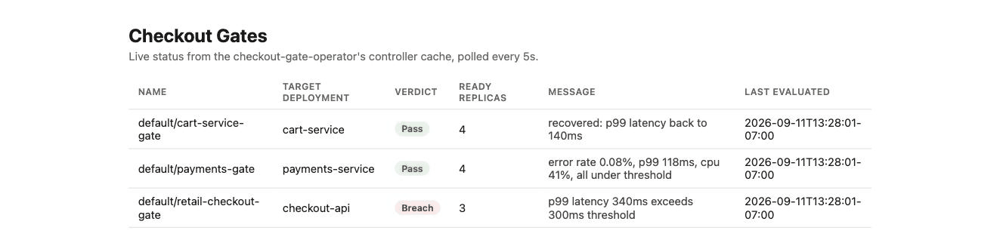

Kubernetes operator, written in Go
Know if checkout is safe to ship before customers find out.
Declare error rate, p99 latency and CPU limits in a CheckoutGate. The operator reads the live numbers for your Deployment and reports Pass, Warn or Breach, with the reason in plain words.
Scroll down to continue
Try the gate in your browser.
This is the operator's decision logic, ported line for line from internal/gate/evaluator.go and checked against the same cases. Move the numbers and watch the verdict change.
Observed on the target
Gate verdict
all thresholds satisfied
# what you apply to the cluster apiVersion: checkout.gerardrecinto.dev/v1alpha1 kind: CheckoutGate metadata: name: retail-checkout-gate spec: targetDeployment: retail-checkout-api maxErrorRateMilliPercent: 500 # 0.5% maxP99LatencyMs: 450 maxCpuSaturationPercent: 80
How it works.
Four small pieces, each in its own package so each can be tested without a cluster.
Declare
A CheckoutGate names the Deployment and the limits that matter for checkout.
Validate
A TLS admission webhook rejects a zero latency limit and warns when the target does not exist yet.
Reconcile
The controller reads error rate, p99 and CPU from Prometheus and asks the pure gate logic for a verdict.
Report
The verdict lands in status, on a Svelte dashboard, and optionally on NATS when it changes.
Breach versus Warn
Errors and latency are customer-facing, so they breach. CPU alone only warns, so a busy pod does not block a rollout on a resource signal by itself.
No traffic is not an outage
A service with no requests returns NaN from Prometheus. The operator reads that as no signal instead of a huge negative number.
The dashboard.
A Svelte app polls a small Go status API that shares the controller's informer cache. This recording uses sample gates pushed by a local script, not a live cluster.

What is checked, and what is not.
Every merge to main has to clear these gates.
Gates on every pull request
- go test -race across the operator packages
- gofmt and staticcheck with no findings
- Coverage floors per package, never lowered to merge
- Generated CRD must match the Go types
- Frontend type check and build
- Gitleaks, Trivy and CodeQL scans; images signed with Cosign
Not verified yet
A full run on a live cluster: applying the CRD, watching the controller reconcile a real Deployment, and the webhook rejecting a bad request over live TLS. The fake-client tests cover the logic, not the informer, watch and leader-election behavior against a real API server.